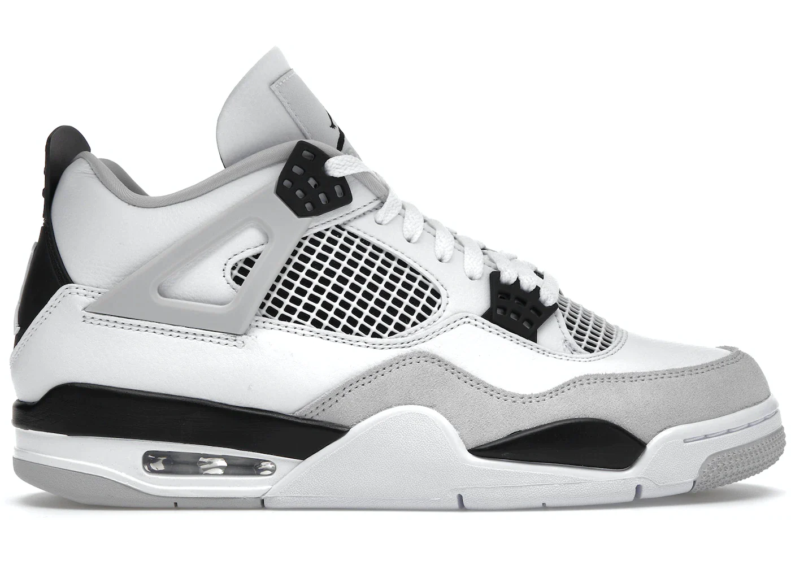
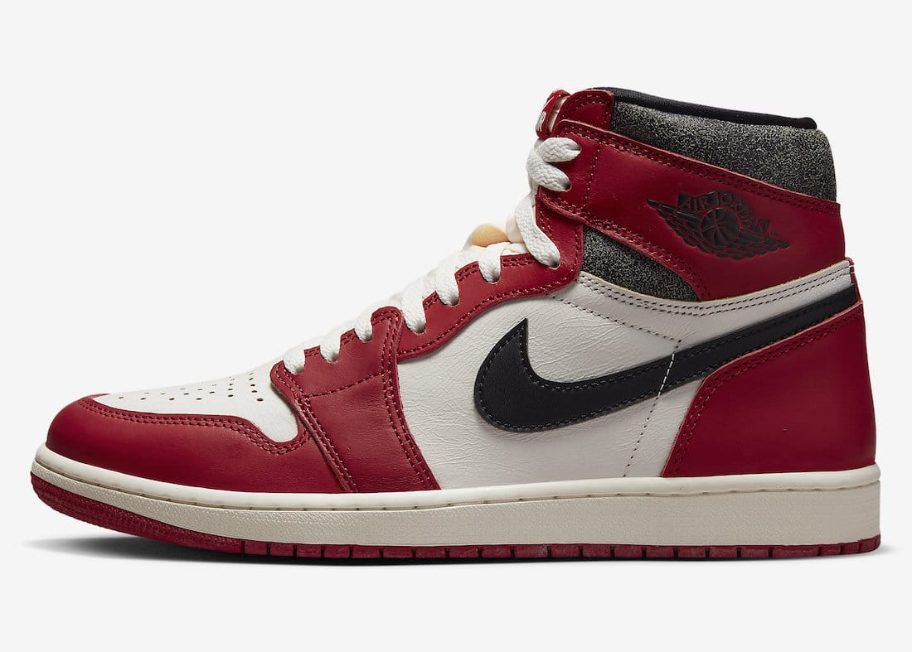

😼KATZ KICKS👟
Jordans are by far the most popular sneakers of all time, these beautiful shoes were created by the one and only Micheal Jordan also known as the best basketball player of all time. These shoes are pretty expensive running you up at least 150 dollars up to 1 million dollars for a pair of signed worn in game first pair of Jordans ever. These shoes are also very comfortable but mostly it depends which ones. There are 23 different types of Jordans and I have made a table showing which ones are best in my opinion.
My Top 3 Fav Jordan's
| Jordan 4 | Jordan 13 | Jordan 1 |
|---|---|---|
|  |  |